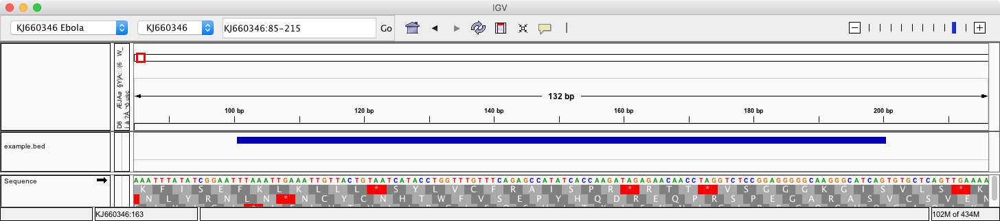
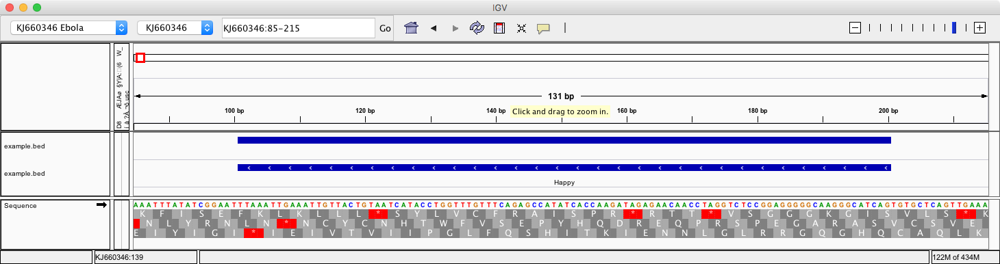
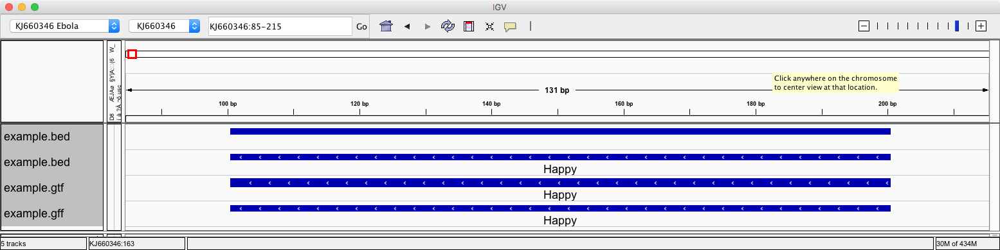
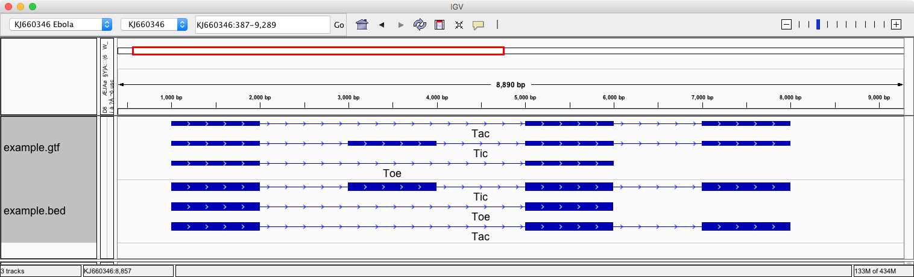

{% extends "unitbase.html" %}
{% load pytags %}
{% load handbook %}
{# title = Interval data formats #}
{# subtitle = representing genomic intervals #}
{# name = Representing genomic intervals as data #}
{% block body %}
{% markdown %}
- - -
### Genomic Intervals
Although genomes exist in three-dimensional space, in bioinformatics we often simplify our
model of the genome to two dimensions in order to facilitate visualization and analysis
tasks. Hence, coordinates for spatially describing genomic loci tend to follow the general
pattern of `chromosome`, `start`, `end` where "start" and "end" are both integers that represent the
left and right positions of an interval. Since nucleic acid molecules are polar
there is a directionality to each interval typically indicated by the `strand` column of the data.
There are two common interval representation formats `BED`and `GFF`. Each is a tab delimited
format where columns have different designations:
* [GFF3: Generic Feature Format][gff3-format]
* [BED: Browser Extensible Data][bed-format]
In addition GFF has prior versions (that should be avoided as much as possible) such as:
* [GFF2: Generic Feature Format][gff2-format] and
* [GTF: Gene Transfer Format][gtf-format].
The fundamental difference between the two main representation formats:
1. The coordinate system:
* `GFF`: 1 based, inclusive on both ends. This means that `[1,5]` contains `1,2,3,4,5`
and that coordinate `1` is the first coordinate of the genome.
* `BED`: is 0 based, non-inclusive on the right. This means that the interval `[1, 5)` contains `1,2,3,4`
and coordinate `1` is the second coordinate of the genome (`0` is the first).
2. Hierachical data representation:
* In the `BED` format a single line record stores all the information on the block structure of a record.
* In the `GFF` format the relationship is built from data distributed over multiple lines.
[bed-format]: https://genome.ucsc.edu/FAQ/FAQformat.html#format1
[gff2-format]: http://gmod.org/wiki/GFF2
[gff3-format]: http://www.sequenceontology.org/gff3.shtml
[gtf-format]: http://mblab.wustl.edu/GTF22.html
- - -
### BED Format
Create and visualize data relative to a genomic build:
# Get an ebola genome and rewrite the sequence name to be simpler.
REF=~/refs/ebola/KJ660346.fa
efetch -db nucleotide -id KJ660346.1 -format fasta | seqret -filter -sid KJ660346 > $REF
# The name of the sequence is the "anchor" relative to which
# intervals are specified.
head -2 $REF
#
# We will build BED and GFF files by hand
# with an editor and display them the browser
#
#
# Example BED file. Note that columns are tab delimited:
# When we display data in an HTML file tabs may be turned into spaces.
#
# Simplest BED file. The so called 3 column BED, the simplest interval form.
KJ660346 100 200
This would be represented in IGV as the image below. Note how
the coordinates have been transformed into 1 based intervals!

As we add more information to the data the display gets more informative
# The so called 6 column BED format
KJ660346 100 200 Happy 0 -
IGV now shows fourth column as label and adds "fishbones" to show the directionality on the glyph.

- - -
### GFF files
We will now represent the same information as GTF and GFF3 files. Save these into separate files
and rember to check for them to be TAB separated. For GFF/GTF we need to add information such as `source` and `type`.
Example GTF file:
KJ660346 lecture CDS 101 200 . - . gene "Happy"; protein_id "HAP2"
Example GFF file:
##gff-version 3
KJ660346 lecture CDS 100 200 . - . gene=Happy; protein_id=HAP2
All together will look like this (note how the GTF is drawn slightly differently):

- - -
### Hierarchical relationships
A relationship indicates multiple features that belong together. For example we need to specifiy all exons of a transcript.
Lets take a gene called `Happy` that has four exons. These four exons can form three transcripts
`Tic` all four exons, `Tac` built from 1st, 3rd and 4th exon, and `Toe` build from 1st and 3rd exon. We'll
build a representation for it with different standards.
The GFF2 representation repeats each entry as many times as needed even if it means enterting the
redundant data:
##gff-version 2
KJ660346 demo exon 1000 2000 . + . gene_id "Happy"; transcript_id "Tic";
KJ660346 demo exon 3000 4000 . + . gene_id "Happy"; transcript_id "Tic";
KJ660346 demo exon 5000 6000 . + . gene_id "Happy"; transcript_id "Tic";
KJ660346 demo exon 7000 8000 . + . gene_id "Happy"; transcript_id "Tic";
KJ660346 demo exon 1000 2000 . + . gene_id "Happy"; transcript_id "Tac";
KJ660346 demo exon 5000 6000 . + . gene_id "Happy"; transcript_id "Tac";
KJ660346 demo exon 7000 8000 . + . gene_id "Happy"; transcript_id "Tac";
KJ660346 demo exon 1000 2000 . + . gene_id "Happy"; transcript_id "Toe";
KJ660346 demo exon 5000 6000 . + . gene_id "Happy"; transcript_id "Toe";
GFF3 representation shortens the above by taggin each entry with the "Parent". This is the feature name
it belongs to.
##gff-version 3
KJ660346 demo exon 1000 2000 . + . Parent=Tic,Tac,Toe;
KJ660346 demo exon 3000 4000 . + . Parent=Tic;
KJ660346 demo exon 5000 6000 . + . Parent=Tic,Tac,Toe;
KJ660346 demo exon 7000 8000 . + . Parent=Tic,Tac;
In the `BED` representation each transcript is fully specified on one line. The columns `10`, `11` and `12`
called `blockCount`, `blockSize` and `blockStart` specifiy the units by which a feature is split.
The `blockStart` is relative to the start coordinate at column `2`.
KJ660346 999 8000 Tic 0 + 999 8000 . 4 1000,1000,1000,1000 0,2000,4000,6000
KJ660346 999 8000 Tac 0 + 999 8000 . 3 1000,1000,1000 0,4000,6000
KJ660346 999 8000 Toe 0 + 999 8000 . 2 1000,1000 0,4000

{% endmarkdown %}
{% endblock %}